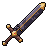
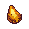

Relic gear
The top of the gear ladder for the road past 99. Relic is one more tier above Singularity, made only by players, out of the new resources every skill unlocks at 110 (mockup 1), shards that only monsters past level 100 drop, and a piece of a boss. Under it, every crafted item in the game gains a quality (normal, fine, superior, masterwork), gem sockets by quality, and the Relic sets carry bonuses that feed straight into the Ascendancy moves (mockup 2). The point of all of it: the best gear in the game is made by somebody on the server, and you can see who.
The ladder
Every tier today is the same step: +4 accuracy, +4 strength and +14 armour per ten levels, Bronze at 10 to Singularity at 90. Relic carries on at 110 with a step and a half (it should feel like the reward it is) and Awakened Relic is the same item taken one step further at 120. Quality and sockets come on top of these, which is why the best Relic in the game is a masterwork one.
Where it comes from
Nobody makes a Relic alone. Each one needs three or four skills at 110, shards off the monsters on the endgame map (mockup 4), and one piece of a boss, so a finished Relic has a gatherer, a crafter and a fighter in it, and the Exchange carries every step.
Masterwork
Everything a player makes (not just Relics: a bronze sword too) rolls a quality when it's made. The further your skill is past the item's requirement, the better the odds, and Smithing 115 (mockup 1) doubles the chance of masterwork. Quality is part of the item: it shows in the name, on the Exchange, and a masterwork carries its maker's name for good.
 The Ancient ForgeSmithing 110 · the endgame map
The Ancient ForgeSmithing 110 · the endgame map

40 0/1
0/1 1
1 Masterwork · a toolMasterwork Singularity pickaxe
Masterwork · a toolMasterwork Singularity pickaxe skilling gems: two opals count, a third does nothing
skilling gems: two opals count, a third does nothing| Quality | Stats | Sockets | Name | Odds at the requirement | … 10 levels past it |
|---|---|---|---|---|---|
| Normal | as listed | 0 | Relic greatsword | 70% | 45% |
| Fine | +5% | 1 | Fine Relic greatsword | 22% | 32% |
| Superior | +10% | 2 | Superior Relic greatsword | 7% | 17% |
| Masterwork | +15% | 3 | Masterwork Relic greatsword, made by … | 1% | 6% (12% with Smithing 115) |
Sockets
No new skill. Sockets are one more thing the Gem Sorter in the Yard does, next to rolling: you bring the item and a sorted gem, pay a fee, and it's set. A fine item has one socket, a superior two, a masterwork three. The gems are the ones the game already has, with the rolls they already carry:
 The Gem Sorterroll · sell · socket
The Gem Sorterroll · sell · socket
 one free
one freeYour sorted combat gems, with their rolls. Pick one for the empty socket: 25,000 tickets. Ruby +9% and jade +6% are already in; a third ruby would do nothing (two per kind), so the hematite is the better pick.
Sets
Three Relic sets, one for each way to fight, six pieces each (helm, body, legs, gloves, boots and the weapon). Two and four pieces give the plain bonuses; all six change your Ascendancy's signature move, so a set is chosen for a build, not just worn. A mixed set gives nothing past two.
Reforging past +3
The forge stops at +3 today (with a chance of breaking as it climbs). A Relic can go to +5, paying Relic shards on top, and a break at +4 or +5 drops it back a level instead of wrecking it, because nobody should lose a Relic to one bad click.
| Step | Cost | Success | On a failure |
|---|---|---|---|
| +1 to +3 | as today | as today | as today |
| +3 to +4 | 3 Primordial bars, 60 Relic shards | 30% | back to +3, nothing lost but the cost |
| +4 to +5 | 6 Primordial bars, 150 Relic shards | 15% | back to +4 |
Time and money
Rough hours for one player doing everything themselves (with the Exchange it's faster, and that's the point). Shards come from monsters past level 100 on the endgame map, about one a kill and five off a boss.
| To make | What it takes | Hours, alone |
|---|---|---|
| One Relic weapon | 12 Primordial bars (36 ore), 40 shards, a boss piece | ≈ 12 |
| The full six-piece set | ≈ 60 bars, 240 shards, 6 boss pieces | ≈ 70 |
| A masterwork set | the same, made again until it rolls (or bought) | ≈ 300+ |
| Awakening (120) | 200 shards and a second boss piece, per item | ≈ 20 each |
Building it
- Needs mockup 1 first (the 110 resources) and is best with mockup 4 (the endgame map, where the shards and the Ancient Forge are).
- Relic is one more row in the tier table and its items: weapons for every style, armour and jewellery, each with PixelLab art.
- Quality is a number on each made item, like the reforge level already is: it travels with the item through the bag, the bank, trades and the Exchange, which already handle a reforge level the same way.
- Sockets are up to three gem slots on that same item record. The bonus code that reads the gem bag reads them too, with the two-per-kind cap applied to bag and sockets together. Socketing is a new tab on the Gem Sorter, not a skill.
- Sets are a count of pieces worn, read where damage is worked out, and the six-piece bonuses are switches on the Ascendancy moves.
- Cost on the server: nothing worth measuring.